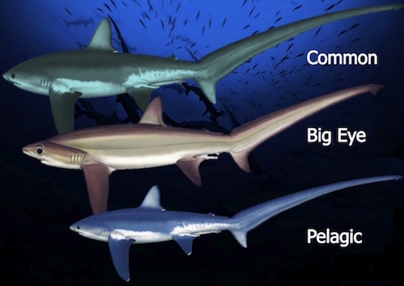

Thresher Shark

Thresher sharks are large lamniform sharks of the family Alopiidae found in all temperate and tropical oceans of the world; the family contains four species, all within the genus Alopias.
Taxonomy
The genus and family name derive from the Greek word alopex, meaning fox. As a result, the long-tailed or common thresher shark, Alopias vulpinus, is also known as the fox shark. The common name is derived from a distinctive, thresher-like tail or caudal fin which can be as long as the body of the shark itself.
Species
The three extant thresher shark species (Alopias pelagicus, Alopias superciliosus, and Alopias vulpinus) are all in the genus Alopias. The possible existence of a hitherto unrecognized fourth species was revealed during the course of a 1995 allozyme analysis by Blaise Eitner. This species is apparently found in the eastern Pacific off Baja California, and has previously been misidentified as the bigeye thresher. So far, it is only known from muscle samples from one specimen, and no aspect of its morphology has been documented.
Phylogeny and Evolution
Based on cytochrome b genes, Martin and Naylor (1997) concluded the thresher sharks form a monophyletic sister group to the clade containing the families Cetorhinidae (basking shark) and Lamnidae (mackerel sharks). The megamouth shark (Megachasma pelagios) was placed as the next-closest relative to these taxa, though the phylogenetic position of that species has yet to be resolved with confidence. Cladistic analyses by Compagno (1991) based on morphological characters, and Shimada (2005) based on dentition, have both corroborated this interpretation.
Within the family, an analysis of allozyme variation by Eitner (1995) found the common thresher is the most basal member, with a sister relationship to a group containing the unrecognized fourth Alopias species and a clade comprising the bigeye and pelagic threshers. However, the position of the undescribed fourth species was only based on a single synapomorphy (derived group-defining character) in one specimen, so some uncertainty in its placement remains.
Distribution and Habitat
Although occasionally sighted in shallow, inshore waters, thresher sharks are primarily pelagic; they prefer the open ocean, venturing no deeper than 500 metres (1,600 ft). Common threshers tend to be more common in coastal waters over continental shelves. Common thresher sharks are found along the continental shelves of North America and Asia of the North Pacific, but are rare in the Central and Western Pacific. In the warmer waters of the Central and Western Pacific, bigeye and pelagic thresher sharks are more common. A thresher shark was seen on the live video feed from one of the ROVs monitoring BP's Macondo oil well blowout in the Gulf of Mexico. This is significantly deeper than the 500m previously thought to be their limit. A bigeye has also turned up in the western Mediterranean and so distribution may be wider than previously believed or environmental factors may be forcing sharks to search for new territories.
Anatomy and Appearance
Named for their exceptionally long, thresher-like heterocercal tail or caudal fins (which can be as long as the total body length), thresher sharks are active predators; the tail is used as a weapon to stun prey. The thresher shark has a short head and a cone-shaped nose. The mouth is generally small, and the teeth range in size from small to large. By far the largest of the three species is the common thresher, Alopias vulpinus, which may reach a length of 6.1 metres (20 ft) and a weight of over 500 kilograms (1,100 lb). The bigeye thresher, Alopias superciliosus, is next in size, reaching a length of 4.9 m (16 ft); at just 3 m (10 ft), the pelagic thresher, Alopias pelagicus, is the smallest.
Thresher sharks are fairly slender, with small dorsal fins and large, recurved pectoral fins. With the exception of the bigeye thresher, these sharks have relatively small eyes positioned to the forward of the head. Coloration ranges from brownish, bluish or purplish gray dorsally with lighter shades ventrally. The three species can be roughly distinguished by the main color of the dorsal surface of the body. Common threshers are dark green, bigeye threshers are brown and pelagic threshers are generally blue. Lighting conditions and water clarity can affect how any one shark appears to an observer, but the color test is generally supported when other features are examined.
Diet
Pelagic schooling fish (such as bluefish, juvenile tuna, and mackerel), squid and cuttlefish are the primary food items of the thresher sharks. They are known to follow large schools of fish into shallow waters. Crustaceans and occasionally seabirds are also taken.
Behavior
Thresher sharks are solitary creatures which keep to themselves. It is known that thresher populations of the Indian Ocean are separated by depth and space according to sex. Some species however do occasionally hunt in a group of two or three contrary to their solitary nature. All species are noted for their highly migratory or oceanodromous habits. When hunting schooling fish, thresher sharks are known to "slap" the water, herding and stunning prey. The elongated tail is used to swat smaller fish, stunning them before feeding. Thresher sharks are one of the few shark species known to jump fully out of the water, making turns like dolphins; this behavior is called breaching.
Endothermy
Two species of the thresher have been identified as having a modified circulatory system that acts as a counter-current heat exchanger, which allows them to retain metabolic heat. Mackerel sharks (family Lamnidae) have a similar homologous structure to this which is more extensively developed. This structure is a strip of red muscle along each of its flanks, which has a tight network of blood vessels that transfer metabolic heat inward towards the core of the shark, allowing it to maintain and regulate its body heat.
Reproduction
No distinct breeding season is observed by thresher sharks. Fertilization and embryonic development occur internally; this ovoviviparous or live-bearing mode of reproduction results in a small litter (usually two to four) of large well-developed pups, up to 150 cm at birth in thintail threshers. The young fish exhaust their yolk sacs while still inside the mother, at which time they begin feasting on the mother's unfertilized eggs; this is known as oophagy.
Thresher sharks are slow to mature; males reach sexual maturity between seven and 13 years of age and females between eight and 14 years in bigeye threshers. They may live for 20 years or more. In October 2013, the very first picture of a Thresher shark giving birth was taken by Attila Kaszo off the coast of the Philippines.
Importance to Humans
Threshers have a low fecundity, like all large sharks, and are highly vulnerable to overfishing. Besides being hunted for their meat, threshers are also hunted for their liver oil, skin (for leather), and their fins, for use in shark-fin soup.
They do not appear to be a threat to humans, although some divers have been hit with the upper tail lobe. A dubious account of a fisherman being decapitated by a tail swipe as the shark breached has been reported.
Thresher sharks are classified as prized game fish in the United States and South Africa. Common thresher sharks are the target of a popular recreational fishery off Baja, Mexico. Thresher sharks are farmed in some areas for their value as both a recreational sport fish and for commercial products derived from their flesh.
Conservation
All three thresher shark species have been listed as vulnerable to extinction by the World Conservation Union since 2007 (IUCN).